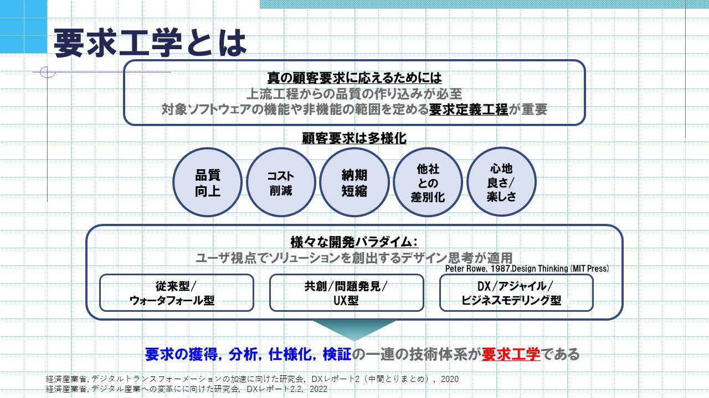
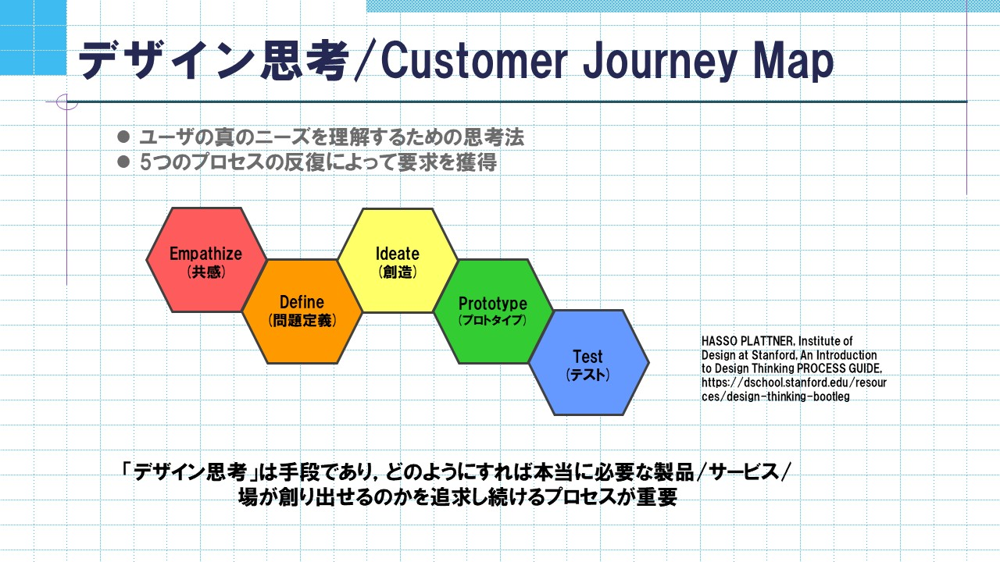

要求工学は，情報システムやコンピュータを組み込んだ製品への顧客要求の獲得，分析，仕様化，検証の一連の技術体系のことをいいます．近年では，要求獲得を行うためにデザイン思考を用いたアジャイル開発と呼ばれる手法が話題になっています．

デザイン思考は，創造的な問題解決の為の方法論として，様々な場面で活用されています．デザイン思考による問題解決のプロセスは，共感，問題定義，創造，プロトタイプ，テストの5つのステップにより構成され，実際の問題解決はこれらの要素の反復によって実践されます．
Microsoft社から提供されているMicrosoft Azure Faceを利用し，感情の推定を行っています．表情から感情を推定し，その結果をCJMと統合することで拡張CJMを作成しました．また，拡張CJMを利用してより詳細な要求獲得を行いました．
ソフトウェア開発を行う際に，開発者が顧客の求めるシステムとその機能を洗い出すために作成する図のことをいいます．顧客が商品やサービスを利用・購入するまでのプロセスを時系列で表した図になります．
生体情報を活用し，表情では合意していても本心では違和感を持つといった表情から読み取ることのできない感情を特定し，CJMに反映させます．鼻部皮膚温度・脳波・眼電位を用いることで生理指標・心理指標・行動指標の3点から感情の特定を行っています．
・ITパスポート
・情報セキュリティマネジメント
・基本情報技術者
・情報セキュリティ内部監査人
・G検定
・Microsoft Certified Azure Fundamentals
・Python3 エンジニア認定基礎
・Python3 エンジニア認定データ分析
スーパー，飲食店
PC講座，TopSE写真撮影，資格取り
スマホゲーム